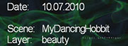

The rrCreateVideo script creates a low-resolution quicktime file from your renderings.
If a client has pre-generated thumbnail cache files, then they are used.
rrCreateVideo uses the open-source available ffmpeg libraries.
By default, RR does only support the MJpeg compressor and .mov quicktimes.
Due to license restrictions, it is not allowed to ship with more advanced codecs.
rrCreateVideo OutputVideoFile Input [options]
OutputVideoFile: |
Resulting output file, .mov is the preferred extension. Some codecs require to change the output type. ".mov" is not possible with all formats. File formats: avi AVI (Audio Video Interleaved) dnxhd raw DNxHD (SMPTE VC-3) h263 raw H.263 h264 raw H.264 video matroska Matroska mov QuickTime / MOV mp4 MP4 (MPEG-4 Part 14) Important: Just because you write e.g. a .h264 file, does not mean that it is a h264 encoded file. You have to choose the right codec as well! (see "More codecs" on the bottom of this page) |
Input: |
Image Input. Specify one image from the sequence.The frame number should be replaced with a # (but not required) |
-fps: |
Set frames per second (e.g. "25" "29.97" ) |
-q: |
Set the quality for the encoding.The range for this value depends on the codec you select. Possible values for MJpeg are from 1 (best) to 20 (worst) |
-kbit: |
Set the bitrate for the encoding. The values are in KBit. |
-codec codecName: |
Set the video codec. Use -list to see all available codecs if you have installed more codecs. By default rrCreatevideo supports these codecs (see "More codecs" on the bottom of this page to install more codecs): mjpeg MJPEG (Motion JPEG) default prores Apple ProRes avui Avid Meridien Uncompressed huffyuv Huffyuv / HuffYUV I recommend Huffyuv if you want to use a lossless codec. avrp Avid 1:1 10-bit RGB Packer ayuv Uncompressed packed MS 4:4:4:4 dnxhd VC3/DNxHD ffvhuff Huffyuv FFmpeg variant h263 H.263 / H.263-1996 mpeg4 MPEG-4 part 2 msmpeg4 MPEG-4 part 2 Microsoft variant version 3 r210 Uncompressed RGB 10-bit rawvideo raw video v210 Uncompressed 4:2:2 10-bit v308 Uncompressed packed 4:4:4 v408 Uncompressed packed QT 4:4:4:4 v410 Uncompressed 4:4:4 10-bit wmv2 Windows Media Video 8 y41p Uncompressed YUV 4:1:1 12-bit yuv4 Uncompressed packed 4:2:0 |
-fullres: |
Create fullres Quicktime (otherwise thumbnail 500x375, uses client cached files for high speed) |
-scale: |
Changes the resolution of the video. maxWidth and maxHeight are required.'letterbox' is by default set to true. inPixelRatio and outPixelRatio are by default set to 1.0. |
-g: |
Apply gamma correction |
-w: |
Name of website folder of job (folder only, no complete directory). Loads client cached image files if available. |
-c: |
Create cache files in case they do not exist. Then rrViewer or SequenceCheck do not have to load the full again. |
-tl,-tr,-br,-bl: |
Adds text to TopLeft, TopRight, BottomRight, BottomLeft. Possible variables are (with asterisk *): *frame*: Current frame number of image. |
-tli,-tri,-bri,-bli,mi: |
Imprints an image file into the video.The image should have an alpha channel. |
-ini: |
If this flag is set, then the imprint image will be in the background of the text. Otherwise the text is written beside the image. |
-in: |
If this flag is *not* set, then bars are added (for the text & image). |
-slate: |
Create a one-frame slate with text. |
-slateImg: |
An image to be used as background for the Slate. It will be scaled proportionally and then cropped to fit. Can be used without slate text. |
-seq [start] [end] [step] [offset]: |
Defines a start and end frame for the conversion. Otherwise it converts the whole sequence. |
-YUV [mode]: |
Changes the YUV color conversion. Possible modes are: PC (default) 601 (SD) 709 (HD) |
-List: |
List all available codecs and formats for compression |
Note about speed:
If you use -scale or -fullres, then rrCreatevideo can not use the cache files.
This means it has to load the whole image sequence again.
Which is many times slower.
Scale to a max width of 1000 *OR* a max height of 500 (Lettebox off):
-scale 1000 500 false
Scale your source video (non-anamorph) into a PAL 16:9 anamorph video:
-scale 720 576 true 1.0 1.4222
Scale your source video (non-anamorph) into a PAL 4:3 video:
-scale 720 576 true 1.0 1.0667
Scale your source video (anamorph 16:9) into a PAL 4:3 video with letterbox:
-scale 720 576 true 1.4222 1.0667
Create a slate with some informations about the scene and background image:
-SlateImg "\\fileserver\share\MySplashScreen.png" -Slate "Date:,,Scene:,Layer: ~ <date ddd, dd.MMM>,,<SceneFile>,<Layer>"

RR is not able to ship ffmpeg libs with all codecs.
Some codecs as h264 and h265 are licenses under GPL which would require to make RR open source as well.
Support for more codecs and output formats:
You need to remove the files avcodec-55.dll, avformat-55.dll, avutil-52.dll from the RR\bin\win directory. (Linux: libavcodec.so.55, libavformat.so.55, libavutil.so.52, OSX: avcodec-55.dylib, avformat-55.dylib, avutil-52.dylib )
Then place your own avcodec-55.dll, avformat-55.dll and avutil-52.dll dynamic library in the same folder.
The files you downloaded could be named without any version (avcodec.dll), you can use them as well. (Never rename any windows library file!)
What to download:
You can get libraries via http://ffmpeg.org/download.html
Use the link to the webpage "Windows Packages" or "Windows Builds".
Choose "Shared" or "Dynamic" (never "Static"), then choose OS and bit and use the link to "Previous FFmpeg 64-bit Static Versions".
Download a package not later than 06-Aug-2014.
Which version?
Other versions than avcodec v.55, avformat v.55, avutil v.52 are not supported.
The versions are either stated in the readme or in the filename of the .dll or .lib file.
If you have a library file without the version name, you can open it in a text editor and search for "Lavf" in libavformat or "Lavc" in libavcodec.
Examples commandlines for codecs:
Quicktimes dnxhd:
"<rrBin>rrCreateVideo.exe" "<ImageDirComplete><..\><ImageFilename>.mov" "<ImageDir><ImageFilename>#<ImageExtension>" -fullres -codec dnxhd -kbit 120 -fps
Mpeg4:
"<rrBin>rrCreateVideo.exe" "<ImageDirComplete><..\><ImageFilename>.mp4" "<ImageDir><ImageFilename>#<ImageExtension>" -fullres -codec mpeg4 -q 7
H.264 as Quicktime with quality only:
"<rrBin>rrCreateVideo.exe" "<ImageDirComplete><..\><ImageFilename>.mov" "<ImageDir><ImageFilename>#<ImageExtension>" -fullres -codec libx264 -q 7
H.264 as mp4 with bit/s only:
"<rrBin>rrCreateVideo.exe" "<ImageDirComplete><..\><ImageFilename>.mp4" "<ImageDir><ImageFilename>#<ImageExtension>" -fullres -codec libx264 -kbit 5000
You need to download additional codecs first.
Then copy the example post-script
[RR]\render_apps\_prepost_scripts\additional\post01b__Create_FinalCut_Video.cfg
to
[RR]\render_apps\_prepost_scripts\post01b__Create_FinalCut_Video.cfg
Note:
The VC-3 (aka Avid DNxHD) Codec does only support a few resolutions/frame rates/ bitrates:
Project Format Resolution Frame Size Bits FPS <bitrate>
1080i / 59.94 DNxHD 220 1920 x 1080 8 29.97 220Mb
1080i / 59.94 DNxHD 145 1920 x 1080 8 29.97 145Mb
1080i / 50 DNxHD 185 1920 x 1080 8 25 185Mb
1080i / 50 DNxHD 120 1920 x 1080 8 25 120Mb
1080p / 25 DNxHD 185 1920 x 1080 8 25 185Mb
1080p / 25 DNxHD 120 1920 x 1080 8 25 120Mb
1080p / 25 DNxHD 36 1920 x 1080 8 25 36Mb
1080p / 24 DNxHD 175 1920 x 1080 8 24 175Mb
1080p / 24 DNxHD 115 1920 x 1080 8 24 115Mb
1080p / 24 DNxHD 36 1920 x 1080 8 24 36Mb
1080p / 23.976 DNxHD 175 1920 x 1080 8 23.976 175Mb
1080p / 23.976 DNxHD 115 1920 x 1080 8 23.976 115Mb
1080p / 23.976 DNxHD 36 1920 x 1080 8 23.976 36Mb
1080p / 29.7 DNxHD 45 1920 x 1080 8 29.97 45Mb
720p / 59.94 DNxHD 220 1280x720 8 59.94 220Mb
720p / 59.94 DNxHD 145 1280x720 8 59.94 145Mb
720p / 50 DNxHD 175 1280x720 8 50 175Mb
720p / 50 DNxHD 115 1280x720 8 50 115Mb
720p / 23.976 DNxHD 90 1280x720 8 23.976 90Mb
720p / 23.976 DNxHD 60 1280x720 8 23.976 60Mb